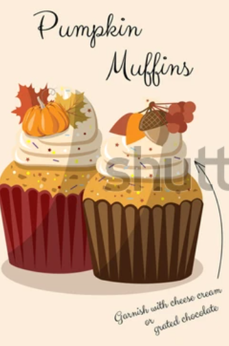
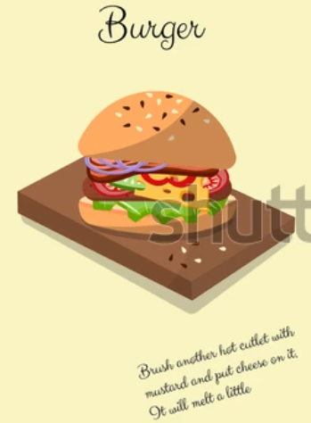
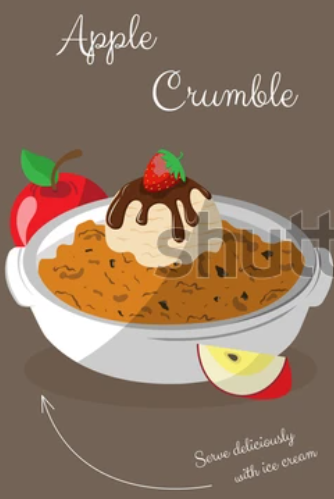
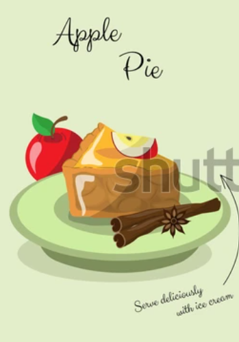

Pumkin Muffins
ingredients
- PUMPKIN -200 gm
- EGGS-2 PIECES
- SUGAR-200 gm
- VEGETABLE OIL-87 ML
- FLOUR-150 GR
- CINNAMON -1 TSP
- BAKING POWDER-1 TSP
Preparation
- Grind raw pumpkin in a blender
- Add eggs, sugar, butter. Mix.
- Separately combine flour, baking powder and cinnamon and combine with pumpkin dough.
- Pour the dough into molds. Bake 15-20 minutes at 392° F (200°C)

Burgers
ingredients
- MINCED MEAT-800 GR
- OLIVE OIL
- LARGE ONION -2 PC
- CUCUMBER-2 PC
- SESAME BUN-4 PC
- SMOKED BACON-4-8 SLICES
- CHEESE-4 SLICES
- TOMATO-2PC PEPPER-1PC
- 2 TBSP MAYONNAISE
- 1 TBSP KETCHUP
- 1 TSP WORCESTERSHIRE SAUCE
Preparation
- Divide the minced meat into 4 parts, form cutlets and fry them in a frying pan greased with olive oil for 6-8 minutes.
- Fry the bacon.
- Cut the onion into rings, sprinkle with vinegar, sprinkle with salt.
- Cut tomatoes, cucumbers, peppers, cheese.
- Grease the buns with the sauce and assemble the burger.

Apple Crumble
ingredients
- Apples - 6 pieces
- SUGAR-6 TABLESPOONS
- PINCH OF GROUND CINNAMON
- 1 VANILLA POD
- DRIED CRANBERRIES -3 TABLESPOONS
- CINNAMON -1 TSP
- LEMON JUICE OF HALF A LEMON, WHOLE ZEST
- FLOUR-100 GR.
- CANE SUGAR-2 TABLESPOONS
- BUTTER-50 GR.
- PINCH OF CINNAMON
- MUESLI-4 TABLESPOONS
Preparation
- Heat a baking dish, add sugar and heat for about 5 minutes. Add cinnamon, vanilla seeds, 3 grated apples. Cook for 3 minutes.
- Add the remaining 3 apples (chopped), cranberries, lemon juice and zest. Remove from heat,
- Combine flour, sugar, cinnamon, butter in a bowl and knead until crumbled. Add muesli
- Sprinkle crumbs on top of the filling and heat on the stove until boiling. After-send to the oven for 12:14 minutes. Bake at 392°F (200°C)

Apple Pie
ingredients
- FLOUR-450 GRAMS
- BUTTER-300 GRAMS
- ICE WATER-150 GRAMS
- SALT-A TEASPOON
- APPLES-850 GRAMS
- STARCH-25 GRAMS
- FLOUR-25 GRAMS
- SUGAR-150 GRAMS
- JUICE FROM HALF A LEMON
- GROUND CINNAMON -0.5 TEASPOON
- NUTMEG-PINCH
Preparation
- Add salt to flour. Chop cold butter with a knife with flour until crumbs. Add ice water and quickly knead the dough. Wrap it in plastic and refrigerate for 2 hours.
- Peel the apples, cut into slices. Add spices, lemon juice, sugar, starch, flour, melted butter to the apples. Mix
- Roll out 2/3 of the dough into a 3 mm layer and cover the mold with it. Put the filling there.
- Roll out the rest of the dough and cover the cake with it, holding the edges together. Bake for 45-50 minutes at 392°F (200°C)
